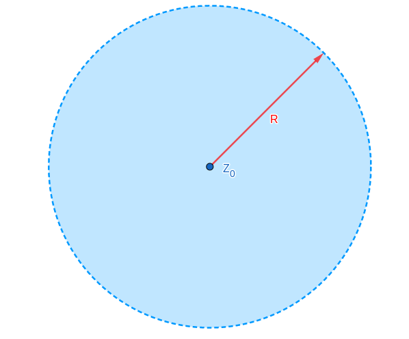
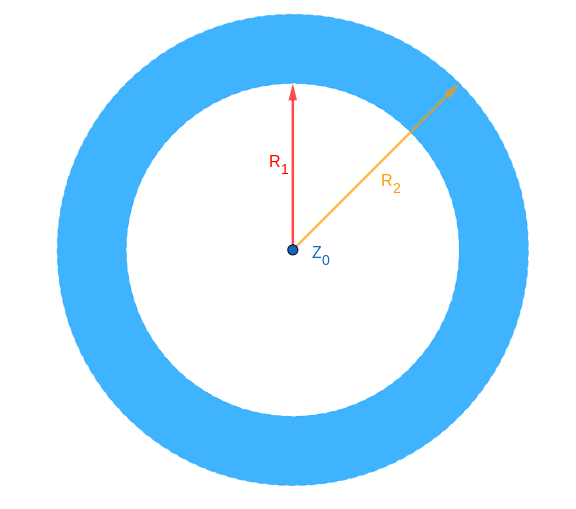

Series de Taylor
$$ f(z) = \sum_{n=0}^{\infty} a_n (z-z_0)^n$$
El disco de convergencia de la serie se define con un radio $R$ (puede ser $0$ o $\inf$) tal que:
• $f$ converge en $\{|z-z_0| < R\}$
• $f$ diverge en $\{|z-z_0| > R\}$
Disco de convergencia:

Teorema: La función
$$ f(z) = \sum_{n=0}^{\infty} a_n (z-z_0)^n$$
es analítica dentro del disco de convergencia.
Además, la integración y derivación se pueden hacer término a término con la serie.
Teorema: Si una fución $f(z)$ es analítica en un entorno de $z_0$, tiene un desarrollo de Taylor con radio de convergencia hasta la primera singularidad de $f$
• Algunos desarrollos importantes:
$$ e^z = \sum_{n=0}^{\infty} \frac{z^n}{n!}$$
$$ \cos(z) = \sum_{n=0}^{\infty} \frac{z^{2n}(-1)^n}{(2n)!} \text{ , } \sin(z) = \sum_{n=0}^{\infty} \frac{z^{2n+1}(-1)^n}{(2n+1)!}$$
$$ \cosh(z) = \sum_{n=0}^{\infty} \frac{z^{2n}}{(2n)!} \text{ , } \sinh(z) = \sum_{n=0}^{\infty} \frac{z^{2n+1}}{(2n+1)!}$$
$$ \ln(1+z) = \sum_{n=0}^{\infty} \frac{(-1)^{n+1}z^n}{n} \text{ en } |z| < 1$$
$$ \frac{1}{1-z} = \sum_{n=0}^{\infty} z^n \text{ en } |z| < 1$$
Series de Laurent
$$ f(z) = \sum_{n=-\infty}^{\infty} a_n (z-z_0)^n$$
• El anillo de convergencia de la serie se define con dos radios, el radio interior $R_1$ (puede ser $0$) y el radio exterior $R_2$ (puede ser $\infty$) tal que:
• $f$ converge en $\{R_1 < |z-z_0| < R_2\}$
• $f$ diverge en $\{|z-z_0| < R_1\} \cup \{|z-z_0| > R_2\}$
Anillo de convergencia:

Se llama parte principal de la serie de Laurent a la parte correspondiente a los exponentes negativos. Es decir:
$$ \text{Parte Principal f(z)} = \sum_{n=-\infty}^{-1} a_n (z-z_0)^n =$$
$$ = \sum_{n=1}^{\infty} \frac{a_{-n}}{(z-z_0)^{n}} $$
• Teorema: La función $f(z) = \sum_{n=-\infty}^{\infty} a_n (z-z_0)^n$ es analítica dentro del anillo de convergencia.
• Además, la integración y derivación se pueden hacer término a término con la serie.
• Teorema: Si una fución $f(z)$ es analítica en un anillo (caso importante: cuando es analítica en $|z-z_0| < R$ salvo en $z_0$), entonces tiene un desarrollo de Laurent en dicho anillo